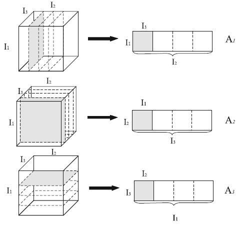
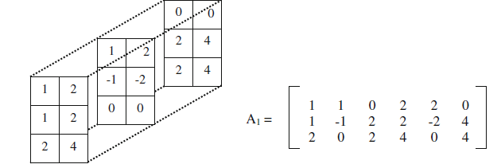
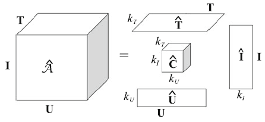
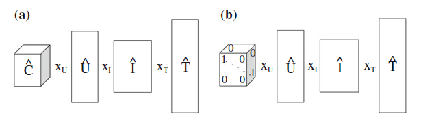

Matrix Factorization
Eigenvalue Decomposition
矩阵的特征值与特征向量 $A\vec e = \lambda \vec e$
从而有 $AE = E \Lambda$
那么矩阵 $A$ 可分解为 $A = E\Lambda E^{-1}$
Non-negative Matrix Factorization (NMF)
矩阵 $A$ 分解为 $UV$ 的形式，$A, U, V$ 均不含负值元素
最小化：$||A-UV|| = \sum_{k=1}^K(a_{mn}-u_{mk}v_{kn})^2$
更新：$U \leftarrow U\frac{AV^T}{AVV^T}$，$V \leftarrow V\frac{U^TA}{U^TUV}$
注意：最小化问题仅仅对单一的 $U$ 或 $V$ 是凸的，因此，只能达到局部最优的近似解。
Latent Semantic Indexing
基于 SVD 方法，$A_{I_1 \times I_2} = U_{I_1\times I_1} \cdot S_{I_1 \times I_2} \cdot V^T_{I_2\times I_2}$，这里的 $S$ 是一个对角矩阵，其元素为 $A$ 的非负奇异值按从大到小的排列。
Probabilistic Latent Semantic Indexing
LSI 的概率版本，原本多用于文档-主题-单词模型。用矩阵 $A$ 中的 $a_{ij}$ 即为概率 $P(d_i, w_j)$ 的观察值， $P(d_i, w_j)$ 的生成过程首先以某种概率 $P(T_l)$ 选择一个隐藏因子 (Latent Factor) $T_l$，接着根据条件概率 $P(d_i|T_l)$ 和 $P(w_j |T_l)$ 采样出文档（用户）和单词（商品）的概率。
矩阵分解形式：$R = U_k \times S_k \times V^T_k$，$U_k$ 的第 $(i, l)$ 元素即为概率 $P(d_i | T_l)$，对角矩阵 $S_k$ 的第 $l$ 个对角元素为 $P(T_l)$，$V_k$ 的第 $(j,l)$ 元素即为 $P(w_j |T_l)$
从而，$P(d_i, w_j) = \sum_{l=1}^kP(d_i|T_l) P(T_l) P(w_j|T_l)$
CUR Matrix Decomposition
矩阵 $A_{m \times n} = C_{m \times c}U_{c \times c}R_{c \times n}$，其中，
- 矩阵 $C$ 为矩阵 $A$ 中取出的 $c$ 列；
- 矩阵 $R$ 为矩阵 $A$ 中取出的 $c$ 行；
- 矩阵 $U$ 的构造按照如下方式：
- 取矩阵 $C$ 和 $U$ 的交集，记为 $W$
- 对 $W$ 进行SVD，$W = \overline{U}\overline{S}\overline{V}^T$，同时计算出 $\overline{S}$ 的 广义逆 $\overline{S}^+$ （把 $\overline{S}$ 中的非 $0$ 元素变为其倒数，并转置）
- 矩阵 $U = \overline{V}(\overline{S}^+)^2\overline{U}^{T}$
- 注：其实是计算 $W$ 的伪逆过程，但是维基百科给出的用 SVD 方法求伪逆过程， $\overline{S}$ 没有平方
为了提高 CUR 分解的准确性，对于 $C$ 和 $R$ 的采样需根据概率：$P(i) = \sum_{j=1}^n \frac{a_{i,j}^2}{|A|_F}$，其中 $|A|_F = \sqrt{\sum_{i=1}^m\sum_{j=1}^n|a_{i,j}|^2}$，选出的列或者行需要规范化，除以 $\sqrt{c \times P(i)}$
CUR 比 SVD 的运行效率高，因为它只有矩阵 $U$ 比较密集，而通常 $U$ 的规模不会设置的很大。但是其精度会差一些。
Cholesky Decomposition
要求矩阵 $A$ 为正定矩阵，那么 $A$ 可分解为 $L\overline{L}^T$ 的形式，$L$ 为一下三角矩阵，$\overline{L}^T$ 为 $L$ 的共轭转置。
Tensor Factorization
Tensor 背景知识
以三维为例，在矩阵的基础上增加了一维，可看作多个二维矩阵的堆叠。用 $I_1$ 表示行数，$I_2$ 表示列数，$I_3$ 表示堆叠的厚度。一个 3 阶张量 $ \mathcal{A} \in \mathbb{R}^{I_1\times I_2 \times I_3}$ 有三种展开方式：
- $A_1 \in \mathbb{R}^{I_1\times(I_2 \times I_3)}$
- $A_2 \in \mathbb{R}^{I_2\times(I_1 \times I_3)}$
- $A_3 \in \mathbb{R}^{(I_1 \times I_2)\times I_3}$

例子：

在此基础上，定义模积的概念：N-阶张量 $\mathcal{A} \in \mathbb{R}^{I_1 \times \cdots \times I_N}$ 与矩阵 $U \in \mathbb{R}^{J_n \times I_n}$ 的 $n$-模积是一个 $I_1 \times I_2 \times \cdots \times I_{n-1}\times J_n \times I_{n+1} \times \cdots \times I_N$ 的张量，记为 $\mathcal{A} \times_{n} U$，即：
$$
(\mathcal{A} \times_n U)_{i_1i_2\cdots j_n i_{n+1}\cdots i_N} = \sum_{i_n}a_{i_1i_2\cdots i_{n-1}i_ni_{n+1}\cdots i_Nu_{j_n, i_n}}
$$
从而，一般的 SVD 二维矩阵分解可以表示为：$F = S \times_1 U^{(1)} \times_2 U^{(2)}$。扩展为三维张量形式：$\mathcal{A}= S \times_1 U^{(1)} \times_2 U^{(2)} \times_3 U^{(3)}$，其中的 $U^{(k)}$ 对应着 $k$-模展开矩阵列向量的正交扩充。
HOSVD
HOSVD是 Tucker Decomposition 的一个变种，把一个张量分解为一系列矩阵和一个规模较小的核心张量。以社交网络标签系统为例，三维张量 $\mathcal{A} \in \mathbb{R}^{|U| \times |I| \times |T|}$，在观察集 $Y$ 中当用户 $u$ 关于物品 $i$ 打上标签 $t$ 时，$a_{u,i,t} =1$ ，否则 $a_{u,i,t} =0$。那么 $\mathcal{A}$ 有分解形式：$\mathcal{\hat{A}} = \hat{C} \times_u \hat{U} \times_i \hat{I} \times_t \hat{T}$。

分解的优化目标参数：$\theta=(\hat{C}, \hat{U}, \hat{I}, \hat{T})$
优化目标：$\arg\min\limits_{\hat{\theta}}\sum\limits_{(u,i,t) \in Y}(\hat{a}_{u,i,t}-a_{u,i,t})^2$
AlsHOSVD
ALS 表示 Alternating least squares，使用各个模展开矩阵的前 $k$ 个左奇异向量，具体流程如下：
输入：张量 $\mathcal{A}$
输出：近似张量 $\mathcal{\hat{A}}$ 的每一维模展开的前 $k_U, k_I, k_T$ 个左特征向量
- 初始化核心张量 $\mathcal{C}$ 和 $A_1, A_2, A_3$ 的左奇异向量矩阵 $U^{(1)}, U^{(2)}, U^{(3)}$
- repeat
- $\mathcal{C} = \mathcal{A} \times_1 U_{k_U}^{(1)^T} \times_2 U_{k_I}^{(2)^T} \times_3 U_{k_T}^{(3)^T}$
- $\mathcal{\hat{A}} = \mathcal{C} \times_1 U_{k_U}^{(1)} \times_2 U_{k_I}^{(2)} \times_3 U_{k_T}^{(3)}$
- $U_{k_U}^{(1)} \leftarrow $ $A_1$ 的前 $k_U$ 个左奇异向量
- $U_{k_I}^{(2)} \leftarrow $ $A_2$ 的前 $k_I$ 个左奇异向量
- $U_{k_T}^{(3)} \leftarrow $ $A_3$ 的前 $k_T$ 个左奇异向量
- until $|\mathcal{A} - \mathcal{\hat{A}}|^2$ 不再变化或达到预设的迭代次数
- return $\mathcal{C}, U_{k_U}^{(1)}, U_{k_I}^{(2)}, U_{k_T}^{(3)}$
Parallel Factor Analysis
PARAFAC，也称 Canonical Decomposition，是传统 Tucker Decomposition 的一种特例形式。这里的核心张量 $\mathcal{C}$ 只有对角元素为 $1$。图 (a) 为 HOSVD 的分解模型，图 (b) 即为 PARAFAC 的分解模型。

Pairwise Interaction Tensor Factorization
PITF，不同于传统 TD 和 PARAFAC，从二维的角度实现拟合。
$$
\hat{a}_{u,r,t} = \sum\limits_{f}^k\hat{u}_{u,f} \cdot \hat{t}_{t,f}^U + \sum\limits_{f}^k\hat{i}_{i,f} \cdot \hat{t}_{t,f}^I
$$
因此，该模型有四个参数：$\hat{U}\in \mathbb{I}^{|U| \times k}, \hat{I}\in \mathbb{I}^{|I| \times k}, \hat{T}^U\in \mathbb{I}^{|T| \times k}, \hat{T}^I\in \mathbb{I}^{|T| \times k}$
PCLAF and RPCLAF
通过隐藏因子对齐的方式进行拟合。
详细内容参见：Zheng, V., Zheng, Y., Xie, X., Yang, Q.: Towards mobile intelligence: learning from GPS history data for collaborative recommendation. Artif. Intell. 184–185, 17–37 (2012)
Limitations and Extensions
在推荐系统问题中，矩阵 SVD 分解的矩阵已经很稀疏，那么张量分解对应的张量会更加稀疏。为此，可以用 “kernel trick” 将数据空间映射到高维的方法。我们在计算做奇异向量时，用的是矩阵的内积，即 $FF^T$ 的形式求得向量，如果通过 kernel 函数替换普通的内积，就可以完成映射，并且不会增加额外的计算量，与 kernel SVD 方法类似。
HOSVD，PARAFAC 法对应的优化目标都不是凸 (convex) 的，所以会有多个局部最优点。在实际数据集上，有资料显示 HOSVD 要更为稳定。
其他扩展：
HOSVD + Content-Based Method：Nanopoulos, A., Rafailidis, D., Symeonidis, P., Manolopoulos, Y.: Musicbox: personalized music recommendation based on cubic analysis of social tags. IEEE Trans. Audio Speech Lang. Process. 18(2), 407–412 (2010)
数据集是 Last.fm
HOSVD + Clustering Method：Symeonidis, P.: ClustHOSVD: item recommendation by combining semantically enhanced tag clustering with tensor HOSVD. IEEE Syst. Man Cybern. (2015)
大致思路是采用 tf-idf 加上标签的语义信息，做 tag 的 clustering，然后根据每个 cluster 的中心建立标签这个维度。